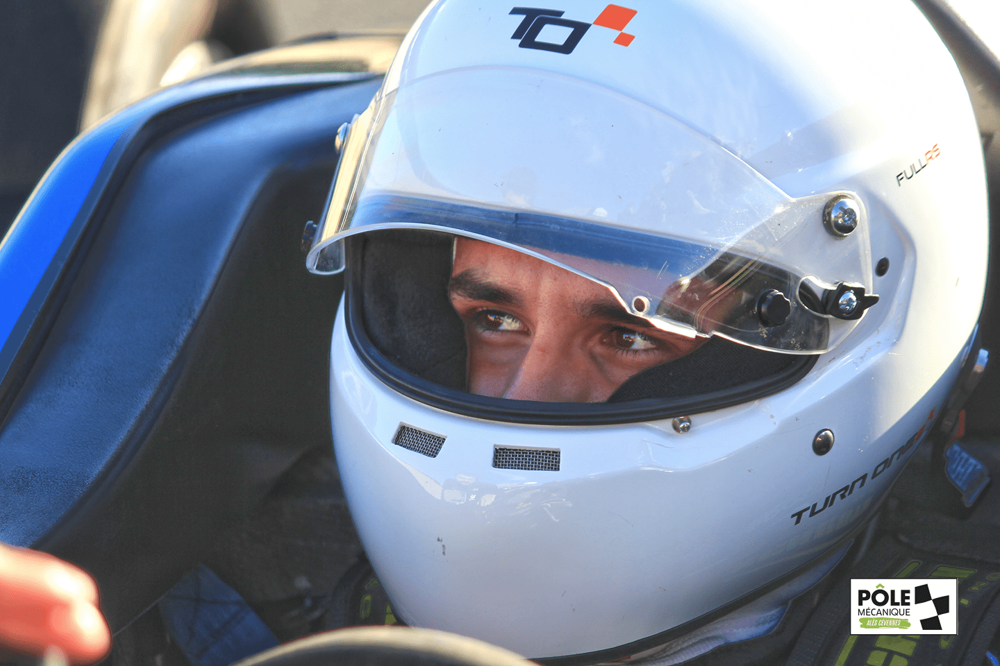
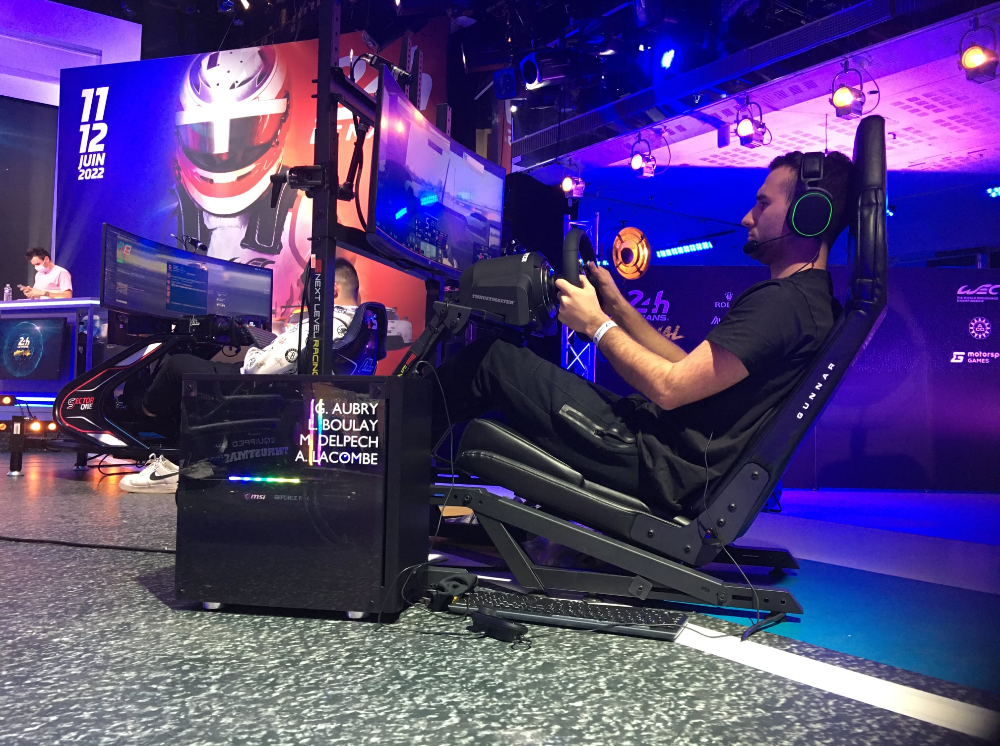

Maxime Delpech est un jeune Toulousain de 19 ans qui pratique le pilotage sur simulateur depuis ses 8 ans. Spécialiste des jeux de la saga Gran Turismo, il décide de se lancer dans les compétitions à 16 ans, en 2019. Ses résultats lui permettent, en mars 2020, d'intégrer la structure PRiMA Esport. Cette structure a pour particularité d’être associée au Team Duqueine, qui participe notamment aux 24h du Mans en LMP2.
Maxime s’entraîne donc sur le simulateur dynamique de Duqueine (utilisé par de nombreux pilotes de courses comme Robert Kubica, Loris Cabirou…), coaché par le Team Manager et ingénieur Max Favard. Ce simulateur est mis à disposition par l’équipe pour s'imprégner des sensations d’une véritable voiture de course.
Cette progression l’amène en Novembre 2020 à conduire pour la 1ère fois une Formule 4 et une LMP3 sur le circuit du Pôle Mécanique d'Alès, marquant un cap important pour l’image des pilotes de simulateur, puisque cet essai s’est avéré être un succès, sans expérience préalable d’une voiture de course.

En Janvier 2022, Maxime a l'opportunité, en compagnie de Gabriel Aubry, Léo Boulay et Arnaud Lacombe, de participer aux 24H du Mans Virtuelles en LMP2 : comptétition parmi les plus reconnues dans le monde du sim-racing, suivie par près de 80 milions de personnes.
Invités par Thrustmaster, soutenus et accompagnés par les ingénieurs de la Team Duqueine et les manageurs de l'équipe PRiMA, son équipe a finalement terminé la course à la 12ème place.
Aujourd'hui, Maxime a quitté la PRiMA esport dans le but de se consacrer au coaching de sim-racers, et ainsi faire profiter de son expérience aux autres pilotes de la plateforme Gran Turismo 7.
Sa société, l'Almado Academy, permet aux pilotes de la plateforme de corriger leurs erreurs de pilotages et d'améliorer leurs techniques de conduite au travers de coachings, de formations en ligne et de réglages automobile.